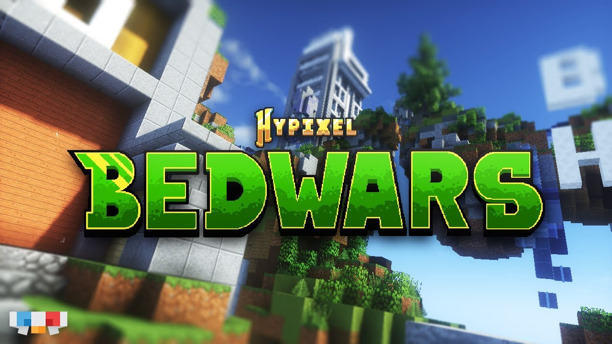
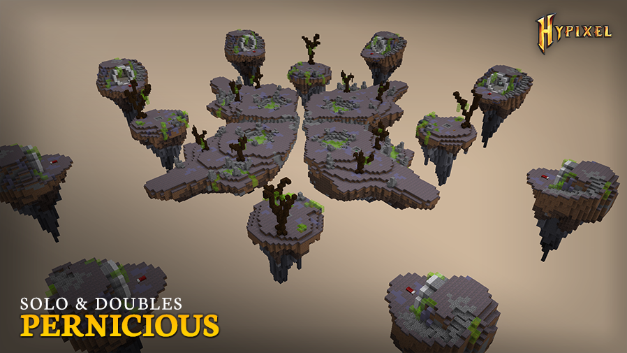
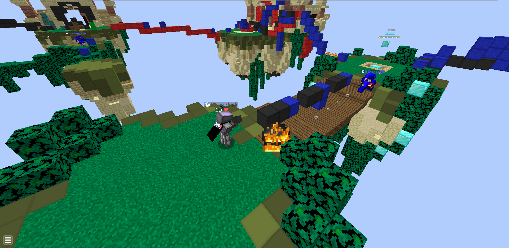
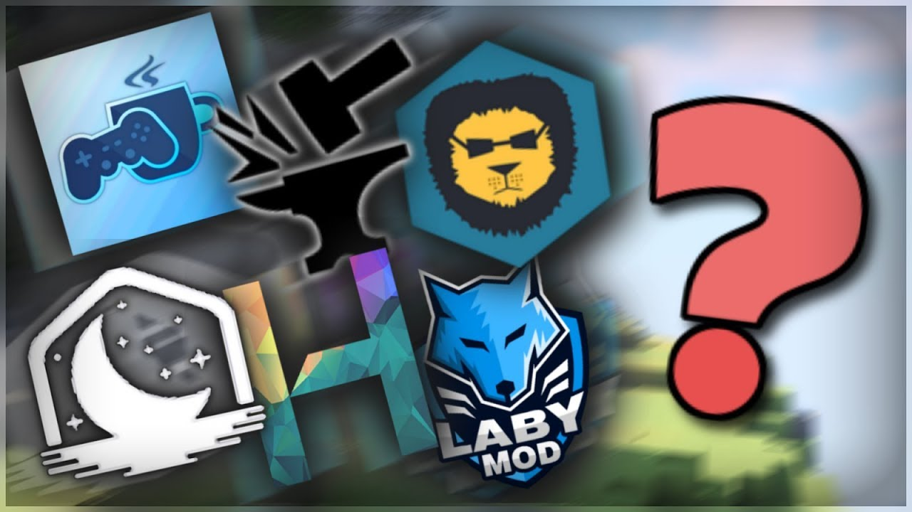
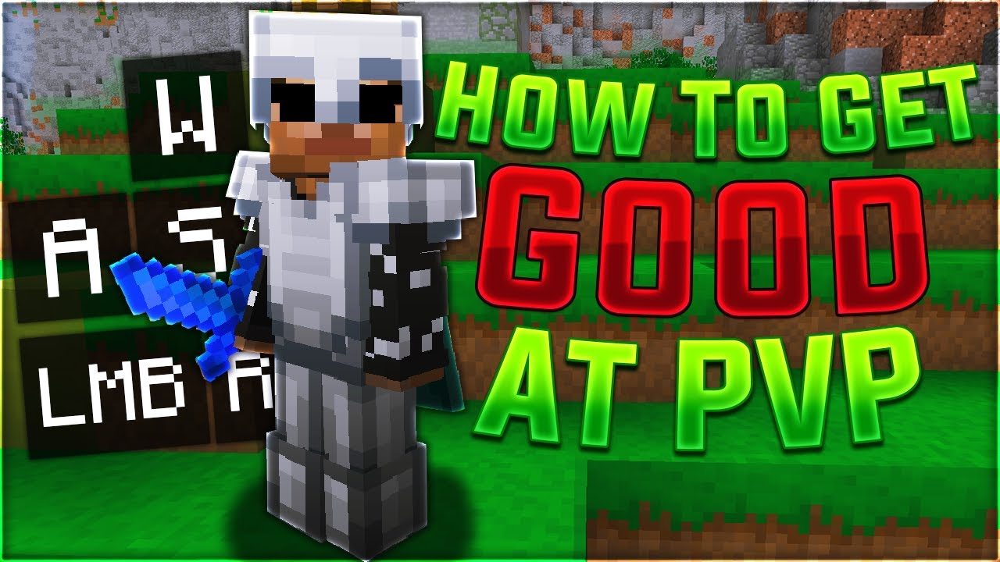

Ce ai nevoie ca sa te joci Minecraft Bedwars?
Pentru a juca Minecraft Bedwars, ai nevoie de versiunea 1.8.9 și o copie a jocului Minecraft Java Edition pe un PC și de o conexiune la internet stabilă.
Trebuie să te conectezi la un server multiplayer care oferă modul Bedwars, cum ar fi Hypixel.
De asemenea, este util să ai un cont Minecraft și să cunoști elementele de bază ale jocului pentru a te descurca în competiție.
Citeste mai mult

Cum joci Minecraft Bedwars?
În Minecraft Bedwars, jucătorii sunt împărțiți în echipe și fiecare echipă are un pat pe care trebuie să-l protejeze.
Scopul este să strângi resurse, să construiești și să îmbunătățești echipamentul, să distrugi paturile echipelor inamice și să elimini toți jucătorii adversari.
Ultima echipă care rămâne cu patul intact sau supraviețuiește este declarată câștigătoare.
Citeste mai mult

Cum sa fi mai bun la Minecraft Bedwars/Game sense?
Pentru un „game sense” bun în Minecraft Bedwars, trebuie să știi cum să gestionezi eficient resursele, investind în echipament și apărare la momentul potrivit.
De asemenea, este esențial să cunoști bine hărțile, astfel încât să poți naviga rapid și să exploatezi punctele strategice.
În plus, învață să anticipezi mișcările inamicilor și să ataci când sunt vulnerabili, evitând riscurile inutile.Și sa stii sa folosesti fireball.
Citeste mai mult

Ce client ar trebui să folosești?
Pentru a juca Minecraft Bedwars, poți utiliza clientul Lunar Client deoarece oferă optimizări de performanță și moduri utile pentru PvP.
O altă opțiune este Badlion Client, care include protecție anti-cheat și o gamă largă de moduri.
Dacă preferi un client mai simplu, Feather Client este o alegere bună, oferind și acesta performanțe ridicate și moduri utile.
Citeste mai mult

Cum sa fi mai bun la PvP?
Pentru a te bate mai bine în Minecraft Bedwars, exersează strafe (mișcări laterale) și block-hitting pentru a evita loviturile inamicului și a-ți maximiza șansele de succes.
Folosește rodația între arme și blocuri pentru a construi rapid bariere în timpul luptei, ceea ce te poate ajuta să scapi sau să creezi o poziție strategică.
Antrenează-ți reflexele pentru a folosi corect knockback-ul, aruncând inamicii de pe hartă atunci când ai ocazia.
În final, învață să folosești rapid resursele pentru a-ți îmbunătăți echipamentul, astfel încât să ai un avantaj în lupte.
Citeste mai mult
